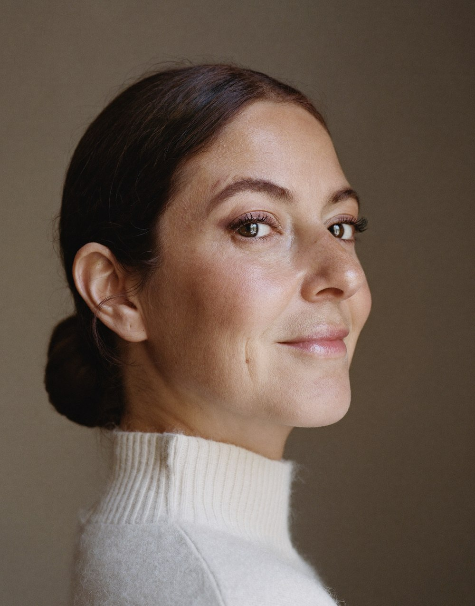
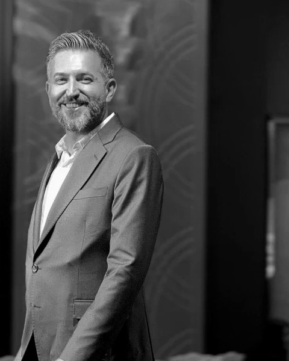
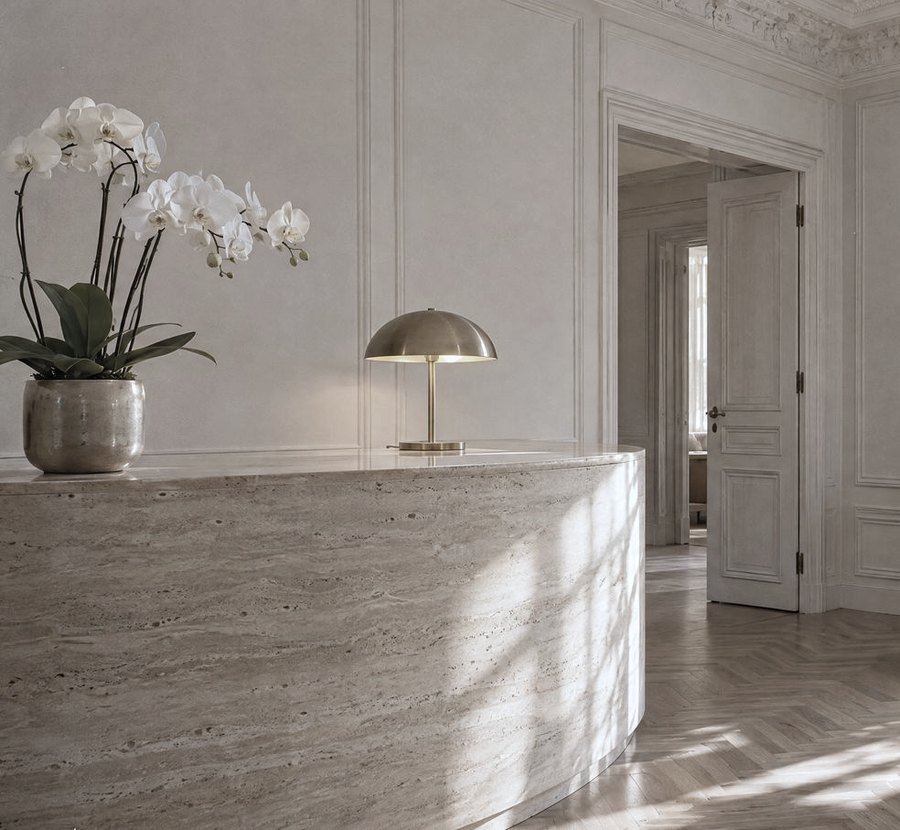
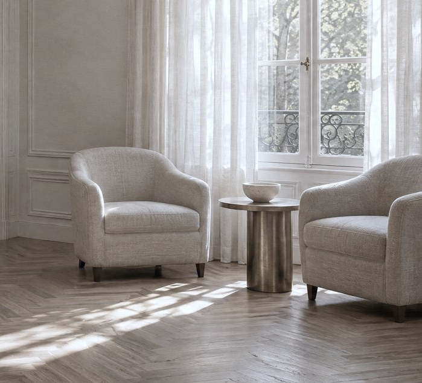

Nişantaşı, İstanbul
Karar vermeden önce her şeyi sorabilirsiniz.
Dr. Oğuzhan Akgül'ün muayenehanesinde görüşme, seçenekler ve süreç tek hekimle ilerler.
- Uygulamayı hekim yapar
- Riskler baştan anlatılır
- Kontrol planı sürece dahildir

- 22 yıl
- hekimlik deneyimi
- 2016
- medikal estetik çalışmaları
- 2020
- Nişantaşı muayenehanesi
- 8 dil
- bilgilendirme ve asistan
Neyi merak ediyorsunuz? Haritadan seçin.
Bir noktaya ya da başlığa dokunun; o bölgede neye bakıldığını ve hangi uygulamaların konuşulduğunu görün.

Uygulama adını bilmeniz gerekmez.
Sizi buraya getiren konuyu seçin; olası nedenleri ve seçenekleri o sayfada anlatıyoruz.
Hizmetler
Bir uygulama baştan sona nasıl ilerler?
Merak ettiğiniz uygulamayı seçin. Gördüğünüz genel akıştır; size özel plan görüşmede netleşir.
Görüşme
Plan
Uygulama günü
Kontrol
Sizi görmeden, size bir şey önermem.
Muayenehaneme gelen herkese ilk söylediğim şudur: Burada bir işlem listesi yok, bir görüşme var. Önce beklentinizi dinler, sonra yüzünüzü değerlendirir, seçenekleri riskleriyle birlikte anlatırım. Karar sizindir.
Dr. Oğuzhan Akgül
Önce dinlemek
Görüşme, ne istediğinizi anlamakla başlar; işlem listesiyle değil.
Açık konuşmak
Her seçeneğin riski ve sınırı baştan söylenir.
Sonrasını planlamak
Uygulama sonrası bakım bilgisi ve kontrol zamanı size iletilir.

Dr. Oğuzhan Akgül
Tıp eğitimini Çukurova Üniversitesi'nde tamamladı. 2016'dan beri medikal estetik alanında çalışıyor, 2020'den beri hastalarını Nişantaşı'ndaki muayenehanesinde kabul ediyor.
Özgeçmişin tamamı- Eğitim
- Çukurova Üniversitesi Tıp Fakültesi
- Hekimlik
- 22 yıl
- Muayenehane
- Nişantaşı, İstanbul
- Belge
- ST-6595 Sağlık Turizmi Yetki Belgesi
Görüşmeye gelmeden önce
Testler bilgilendirme içindir, tanı koymaz. Sonucunuzu yazdırıp yanınızda getirebilirsiniz.
Randevu ve hazırlık
Uygulama ve iyileşme
Sık sorulanlar
Görüşmeye geldiğimde hemen uygulama yapılır mı?
Şart değil. Bu buluşmada önce beklentiniz anlaşılır ve seçenekler konuşulur. Kararınızı sonra da verebilirsiniz.
Görüşmeye gelirken ne getirmeliyim?
Kullandığınız ilaçların listesi, varsa önceki uygulamaların bilgisi ve merak ettiğiniz soruları not etmeniz yeterlidir.
Fiyat bilgisini nasıl öğrenebilirim?
Fiyat, size özel plana bağlıdır. Bu bilgi görüşmede paylaşılır.
Uygulamayı kim yapar?
Uygulamaları Dr. Oğuzhan Akgül yapar. Planlayan ve kontrol eden de aynı hekimdir.
Uygulama sonrası işime ne zaman dönebilirim?
Süre, uygulamanın türüne ve bölgesine göre değişir. Size özel süre görüşmede söylenir.
Yurt dışından geliyorum, süreç nasıl planlanır?
Görüşme öncesi bilgilendirme kendi dilinizde yapılır. Kalış süreniz ve kontrol planınız birlikte belirlenir.
Nişantaşı'ndaki muayenehane


Mekân görselleri temsilîdir; teslimde muayenehanede yapılacak çekim kullanılır.